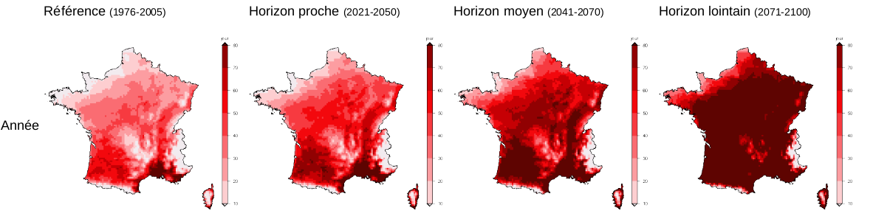

  <div class="row">
    <div class="col-lg-10 col-md-10 mx-auto">
      <h2>Introduction</h2>
          
        <p><a class="lien" a href="/qui-sommes-nous">Nous avions l'intuition</a> qu'il y aurait moins en moins d'eau tout au long du XXIème siècle. C'est MétéoFrance qui nous a invité à nous plonger dans les données sur les sécheresses des sols à venir pour découvrir à quel point.</p>
        <p>Dans la <a class="lien" a href="climatique1">première partie de cette page vous découvrirez comment utiliser les prévisions sur les sécheresses à venir</a>. Ces données sont <a class="lien" a href="http://www.umr-cnrm.fr/spip.php?article605">celles du laboratoire CLIMSEC (partenariat Météo-France, CERFACS et IPSL.)</a> que nous remercions chaleureusement.</p>
        <p>Dans la <a class="lien" a href="climatique1">deuxième partie de ce tutoriel vous découvrirez d'autres données</a> qui ne manqueront pas d'attirer votre curiosité de citoyen, d'agriculteur, de sylviculteur, etc.</p>
        
        <h2>L'origine des données</h2>
        
          <div class="row">
           
          <p><em>Exemple d'une projection climatique. Nombre de journées de plus de 25°C / an à différentes époques à venir.  Météo-France/CNRM2014 : modèle Aladin de Météo-France. RCP 8.5. Drias-climat.fr.</em></p></div>
        <p><a class="lien" href="http://www.climat-en-questions.fr/reponse/evolution-future/prevoir-meteo-prevoir-climat-par-olivier-talagrand"><em>Les projections climatiques dessinent des tendances</em></a>. Les estimations climatiques sont devenues possibles grâce aux données, simulations produites et mises en commun par des laboratoires de recherche de plusieurs nations. La France participe à ce travail scientifique collectif avec la contribution de trois organismes : <em>Institut Pierre-Simon Laplace ou IPSL</em> (en lien avec le CNRS / UPMC / UPEC / Ecole Polytechnique/ CNES / IRD / ENS / Université Paris Diderot / UVSQ / CEA), le <em>Centre national de recherches météorologiques</em> (en lien avec leMétéo France / CNRS) et le <em>Centre européen de recherche et de formation avancée en calcul scientifique ou CERFACS</em> (en lien avec le CNRS / CERFACS / Total SA / Safran / EDF/ EADS France SAS / CNES / Météo-France / ONERA).</p>
        <p>Une des manières les plus simples de lire leurs données est d'utiliser le visualiseur <a class="lien" href="http://drias-climat.fr/"><em>Drias</em></a></p>
            <p>Cependant, les estimations, comme celles présentées sur le site <a class="lien" href="http://drias-climat.fr">Drias</a>, ne prennent pas en compte les spécificités locales comme les micro-climats. Un massif forestier, un lac, influencent le climat local. Les estimations représentent des tendances.</p>
      
        <h2 id="climatique1">Les sécheresses à venir</h2>
                
            <h3>Les estimations sur les sécheresses des sols</h3>
        
            <p>Pour faire ce tutoriel il vous faut un ordinateur et environ 45 minutes. Vous allez passer ce par quoi tout le collectif est passé. </p>
        
            <p><strong><i class="fa fa-quote-left quote" aria-hidden="true"></i> Avant de voir les données voici ce que nous aurions aimé savoir avant de débuter:</strong></p>
                <ul>
                    <li>Vous allez visualiser les estimations de la <strong>sécheresse du sols</strong> pour différentes époques à venir. Les estimations ne prennent pas en compte les spécificités locales comme les micro-climats. Un massif forestier, un lac, influencent sur le climat. Les estimations représentent des <strong>tendances pour votre territoire.</strong> Ce qui du point de vue du principe de précaution ne change pas grand chose.</li>
                    <li>Vous allez visualiser la sécheresse des sols pour des <strong>années classiques</strong>. <strong>Vous découvrirez ce qui deviendra la norme</strong>. Dans cette norme il y aura des années plus clémentes (plus humides) et des sécheresses plus intenses. <strong>Certaines années seront donc plus sèches.</strong></li>
                    <li><strong>Vous allez visualiser l'intensité du manque d'eau dans les sols</strong> par rapport ce à quoi ils étaient habitués à la fin du siècle dernier. Vos neurones viennent de griller? Vous rappelez vous de comment était la nature en 1980? 1990? 2000? Très bien. Les sécheresses que vous allez visualiser représentent l'<strong>intensité du changement que vont subir les sols</strong> dont vous avez le souvenir. En fait c'est plutôt logique: les sécheresses "exceptionnelles" qui arrivaient auparavant une année sur trente devraient se produire désormais une année sur deux. Et un jour ça nous semblera être la norme. Les estimations climatiques prennent donc comme point de "norme" la fin du siècle dernier pour parler des sécheresses.</li>
                    <li>Le scénario A2 est utilisé dans les cartes ci dessous. Ce scénario était à l'époque (en 2007) dit pessimiste et a suivi la tendance réelle d'augmentation des températures (voir <a class="lien" a href="http://www.meteofrance.fr/climat-passe-et-futur/climathd">Climat HD > Températures</a> et les annonces récentes du GIEC. De nouveaux scénarios sont apparus en 2014.  </li>
                </ul>
        
        <p><strong>Les estimations de l'intensité du manque d'eau</strong></p>
        
      <div class="col-lg-10 col-md-10 mx-auto" id="sswi"><p> Voici les cartes réalisées par MétéoFrance pour les périodes :</p>
      <a class="btn btn-primary " href="http://drias-climat.fr/decouverte/cartezoom/scenario/CLIMSEC_ELAB/ARPEGE_RETIC/A2/H1/NORSSWI/A1">2030 / 2040</a>
      <a class="btn btn-primary " href="http://drias-climat.fr/decouverte/cartezoom/scenario/CLIMSEC_ELAB/ARPEGE_RETIC/A2/H2/NORSSWI/A1">2050 / 2060</a>
      <a class="btn btn-primary " href="http://drias-climat.fr/decouverte/cartezoom/scenario/CLIMSEC_ELAB/ARPEGE_RETIC/A2/H3/NORSSWI/A1">2080 / 2090</a>
          <p><i class="fa fa-quote-left quote" aria-hidden="true"></i><em> Un conseil du collectif: observez sur votre territoire l'intensité du manque d'eau ... mois par mois. Dans "pas de temps" sélectionnez un mois - par exemple le mois d'août. Observez la tendance à différentes époques. Cela vous permettra d'avoir une idée de quels sont les mois qui risquent le plus d'être face à un manque d'eau auquel ils ne sont pas habitués. N'hésitez pas à consulter la page dy <a class="lien" href="http://www.umr-cnrm.fr/spip.php?article605">laboratoire Climsec</a> pour comprendre ce sur quoi se base cet indice ou même <a class="lien" a href="https://www.google.com/url?sa=t&rct=j&q=&esrc=s&source=web&cd=2&ved=2ahUKEwj3ydbytJHlAhVHSxoKHWsMA3cQFjABegQIBBAC&url=http%3A%2F%2Fwww.drias-climat.fr%2Fpublic%2Fshared%2Frapport_final_CLIMSEC.pdf&usg=AOvVaw0dSJzot2FxI3oOwqHdRUPK">lire le rapport</a>.</em></p>
        </div>
            
        <p><strong>Un tutoriel vidéo pour vous aider à y voir plus clair</strong>
            
        <p><em>!!Le tutoriel vidéo sera publié mardi dans la journée!!</em></p>
            
    <h2 id="climatique2"> Autres données </h2>
        
     <p>Nous nous excusons auprès des citoyens des Outre-mer, ce sont des territoires sur lesquels nous n'avons pas encore de données sur la sécheresse des sols. C'est la grande frustration de notre collectif. </p>
            
     <h3>Vous avez compris la logique? Voici les autres données auxquelles vous avez accès:</h3>
            <ul>
            <li>Ce sont des prévisions et scénarios explicitement approuvés en assemblée plénière du <a href="https://www.ecologique-solidaire.gouv.fr/comprendre-giec"><em>Groupe d'experts intergouvernemental sur l'évolution du climat (GIEC)</em></a>.
            <li>Certains d'entre vous seront intéressés par les données sur les vagues de chaleur à venir. D'autres sur l'évolution de l'eneigement dans leur massif. Et d'autres encore les estimations du nombre de jours gel (qui concerna les exploitants de vergers ou les viticulteurs par exemple). Nous vous listons une série de données auxquelles vous avez accès.</li>
            <li>si vous souhaitez suivre les évolutions depuis 2014 jusqu'à aujourd'hui se rendre sur <a href="http://www.meteofrance.fr/climat-passe-et-futur/climathd">ClimatHD</a> > <em>démarrer</em> > <em>températures</em>. Cela peut vous amener à décider de choisir un scénario climatiques plus qu'un autre pour visualiser les données climatiques.</li>
            </ul>

            <p>Le visualiseur avancé (<a class="lien" href="http://drias-climat.fr/decouverte/carte/experience?region=SAFRAN&amp;generation=rcp">cliquez ici</a>) va vous permettre de représenter différents critères. C'est un petit peu ardu à utiliser mais une fois qu'on y arrive c'est très intéressant. </p>
        
            <p><strong>Vous avez la possibilité de représenter les prévisions des données suivantes sur plusieurs horizons par mois (préférable), saisons, années</strong></p>
             <p>
            </p>
            <h4>Évolution des feux de forêt</h4>
            <ul>
                <li><a class="lien" a href="http://drias-climat.fr/decouverte/carte/fdf/scenario">évolution des feux de forêt</a></li>
                <li><a class="lien" href="http://meteolimoux.fr/meteo%20feux%20de%20for%C3%AAt/index.html">voici une explication pour comprendre comment l'indice de risque est défini - par météo limoux</a></li>
            </ul>
            <p>
            </p>
            <h4>Évolution de l'enneigement en France</h4>
        
            <ul>
                <li><a class="lien" a href="http://drias-climat.fr/decouverte/carte/neige/experience?region=ALPES">Pour les Alpes</a> et pour les <a class="lien" href="http://drias-climat.fr/decouverte/carte/neige/experience?region=PYRENEES">Pyrénées</a> avec par mois (préférable) ou saison:</li>
                    <ul>
                        <li>Epaisseur de neige moyenne - cm</li>
                        <li>Nombre de jours avec épaisseur de neige > 5 cm - jour(s)</li>
                        <li>Nombre de jours avec épaisseur de neige > 50 cm - jour(s)</li>
                        <li>Nombre de jours avec épaisseur de neige > 100 cm - jour(s)</li>
                        <li>Maximum d’équivalent en eau du manteau neigeux - mm</li></ul>
            </ul>
            <p>
            </p>
                    <h4><a class="lien" a href="http://drias-climat.fr/decouverte/carte/experience?region=SAFRAN&generation=rcp">Températures: les tendances en détail</a></h4>
            <ul>
                <li>Température moyenne - °C </li>
                <li>Température minimale - °C</li>
                <li>Température maximale - °C</li>
                <li>Amplitude thermique - °C </li>
                <li>Extrême chaud de la température minimale (90ème centile de la température minimale) - °C</li>
                <li>Extrême chaud de la température maximale (90ème centile de la température maximale) - °C</li>
                <li>Nombre de journées d'été (température maximale > 25°C) - NBJ </li>
                <li>Nombre de nuits tropicales (température minimale > 20°C) - NBJ </li>
                <li>Nombre de jours anormalement chauds (température maximale supérieure de plus de 5°C à la normale) - NBJ</li>
                <li>Nombre de nuits anormalement chaudes (température minimale supérieure de plus de 5°C à la normale) - NBJ </li>
                <li>Nombre de jours de vague de chaleur (température maximale supérieure de plus de 5°C à la normale pendant au moins 5 jours consécutifs) - NBJ </li>
                <li>Extrême froid de la température minimale (10ème centile de la température minimale) - °C </li>
                <li>Extrême froid de la température maximale (10ème centile de la température maximale) - °C </li>
                <li>Nombre de jours de gel (température minimale &lt;= 0°C) - NBJ </li>
                <li>Nombre de jours sans dégel (température maximale &lt;= 0°C) - NBJ </li>
                <li>Nombre de jours anormalement froids (température minimale inférieure de plus de 5°C à la normale) - NBJ </li>
                <li>Nombre de jours de vague de froid (température minimale inférieure de plus de 5°C à la normale pendant au moins 5 jours consécutifs) - NBJ</li>
            </ul>
        
        <h4><a class="lien" a href="http://drias-climat.fr/decouverte/carte/experience?region=SAFRAN&generation=rcp">Précipitations: les tendances en détail</a></h4>

            <ul>
                <li>Précipitations quotidiennes - mm</li>
                <li>Précipitations moyennes les jours pluvieux - mm </li>
                <li>Cumul de précipitations - mm </li>
                <li>Nombre de jours de pluie (cumul de précipitations >= 1 mm) - NBJ</li>
                <li>Nombre de jours de fortes précipitations (cumul de précipitations >= 20 mm) - NBJ</li>
                <li>Nombre maximum de jours de pluie consécutifs (maximum de jours consécutifs avec cumul de précipitations >= 1 mm) - NBJ </li>
                <li>Pourcentage des précipitations intenses (précipitations au-dessus du 90ème centile annuel) - % </li>
                <li>Période de sècheresse (maximum de jours consécutifs avec cumul de précipitations inférieures à 1mm)</li>
            </ul>
    
     <p>
            
      </p>
            </div>
    </div>
  </div>
